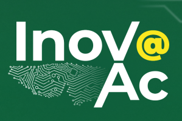
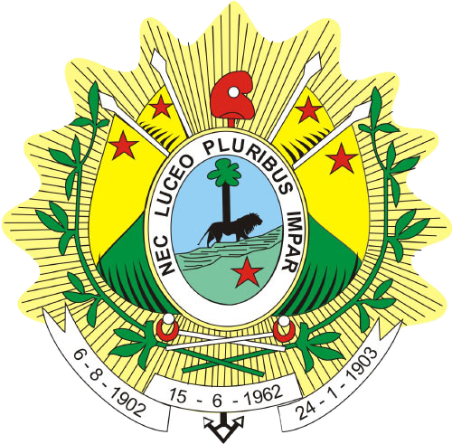

Experiência holográfica
Palácio Rio Branco em 3D
Uma visualização experimental em 3D para aproximar a população do patrimônio histórico-cultural acreano por meio de tecnologias imersivas e acessíveis.
Toque em iniciar, coloque o dispositivo na base da pirâmide holográfica
e acompanhe o modelo tridimensional do Palácio Rio Branco.
Ação desenvolvida no âmbito do programa InovaGov.